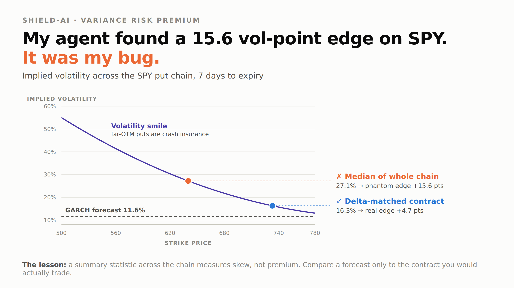

The hedge was the entire profit. The stock book lost money; the options more than covered it. And the puts did not pay because NVDA fell — the shares closed 72 cents below cost. They paid because implied volatility rose toward the GARCH forecast the agent had traded against. One trade is not evidence of an edge, but the mechanism behaved exactly as designed.
| Underlying | Implied vol | GARCH | Edge (pts) | Outcome | Reason |
|---|---|---|---|---|---|
| SPY | — | — | — | SKIPPED | no contract close enough to the target delta for the reference IV to be meaningful |
| AAPL | 27.2% | 28.6% | -1.4 | HOLD | edge inside the ±4 point no-trade band |
| MSFT | 24.1% | 38.8% | -14.6 | REFUSED | protection 14.6 points cheap — blocked: open interest 429 below the 1,000 floor |
| NVDA | 34.1% | 42.2% | -8.0 | EXECUTED | bought 3× NVDA260911P00220000 @ 1.19 · order acbd143b-46d6-4727-bc68-ab2feda45837 |
| JPM | 20.4% | 23.0% | -2.6 | HOLD | edge inside the ±4 point no-trade band |
| XOM | 25.3% | 29.7% | -4.5 | REFUSED | protection 4.5 points cheap — blocked: open interest 535 below the 1,000 floor |
One trade placed, two refused on liquidity, two held inside the no-trade band, one skipped for an unusable reference contract. The liquidity threshold was set before the window opened and was not relaxed once it began blocking the trades I wanted — MSFT was the most attractive signal of the entire run.

On the first live run the agent reported a 15.6 volatility-point edge on SPY. A spectacular edge on the most efficiently priced instrument on earth is not an edge — it is a bug.
It was mine. I compared the GARCH forecast to the median implied volatility across the whole option chain, but far out-of-the-money puts are crash insurance and sit high on the smile. I was measuring skew and calling it alpha.
Reading IV from a single delta-matched contract dropped the edge to +4.7. A regression test now guards it.
A deterministic quant engine computes 99% Portfolio VaR three independent ways, Conditional VaR, GARCH(1,1) volatility and beta-weighted Delta. The same GARCH forecast is compared against option-implied volatility — that gap is the trading signal, so risk measurement and entry logic are one model used twice.
The language model stays asleep until a guardrail breaks, and holds a veto, never a vote: GARCH cannot read that the FDA decision is on Thursday. Every proposal then passes a deterministic policy filter — options level, liquidity, coverage, cost, buying power — before any order reaches Alpaca's MCP server.
47 verification tests pass, including Kupiec proportion-of-failures and Christoffersen independence backtests that validate the risk model statistically rather than asserting it works.